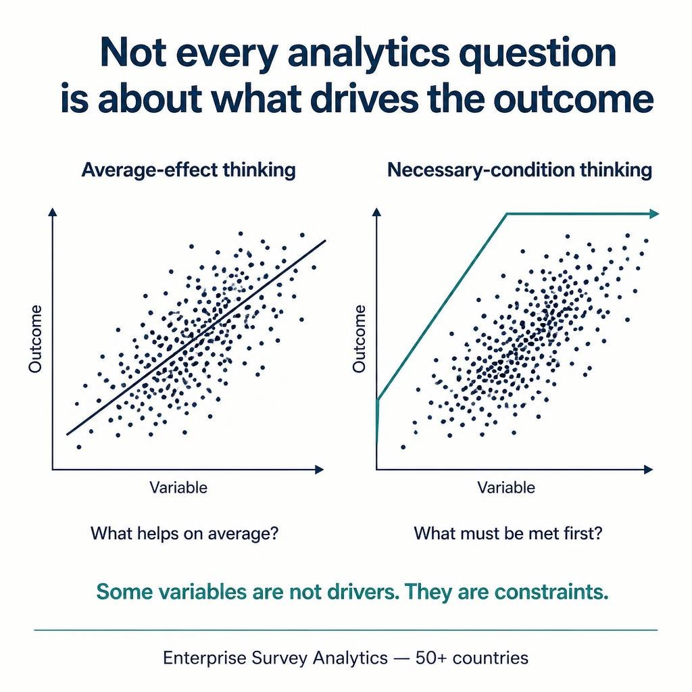

Overview
This project highlights a distinction that is often missed in analytics work: some questions are about what improves an outcome on average, while others are about what must already be true for that outcome to be possible at all.
In the enterprise survey setting, the goal was not only to identify variables associated with performance, but also to detect constraint variables that act like minimum requirements. That called for Necessary Condition Analysis (NCA), not just standard correlation or regression thinking.
The result is a different interpretation layer: from average drivers to structural floors.
Architecture

The Core Idea
Regression, correlation, and feature importance answer a familiar question:
Which variables are associated with better outcomes on average?
But some business and policy questions are different:
What must be true before high performance is even achievable?
NCA answers that second question by looking for empty regions in the data space and estimating a ceiling line. The insight is not that a variable helps on average, but that below a certain threshold, the desired outcome does not appear.
Drivers vs Necessary Conditions
Average-Effect View
Correlation and regression estimate the expected directional effect of a variable across the observed population.
Constraint View
NCA identifies variables that act as bottlenecks or floor constraints: without enough of them, high outcomes are absent.
Interpretation Shift
The conclusion changes from “this helps” to “this is required before the target becomes feasible.”
Why this matters
- prevents using average-effect tools for fundamentally different questions
- surfaces bottlenecks that standard regression may understate
- changes decision logic from optimization to feasibility
- is useful in policy, operations, capability building, and constraint analysis
How the method reframes analysis
Regression asks:
"What increases Y on average?"
NCA asks:
"What minimum level of X is required before high Y becomes possible?"
This is not just a different statistic.
It is a different analytical question.
Where this pattern generalizes
- enterprise growth and productivity analysis
- capability maturity assessments
- policy and development constraints
- organizational readiness and operational thresholds
Key Takeaway
Some variables are not drivers. They are constraints.
Choosing between driver analysis and necessary-condition analysis starts with framing the business question correctly.